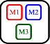
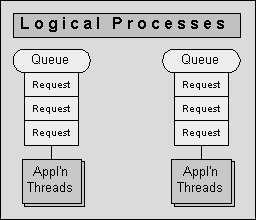
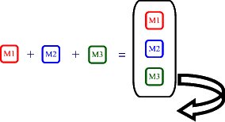
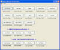

Edward Harned (eh at
coopsoft dot com)
Senior Developer, Cooperative Software Systems, Inc.
April, 2009
Preface
It is often imperceptible why we house application threads inside a container. After all, anyone can create a thread anywhere, so what's the point? Exactly the enigma. Once you understand the problem, then the solution makes perfect sense. Therefore, we start at the beginning.
The problem arises
|
|
|
Mainframes
In the beginning (of third generation computers) came the IBM® System/360® series of computers. These audacious machines could have
multiple computer programs (called tasks or processes) memory
resident and switch execution between them.
An early innovation was the idea that a task itself could be divided into sub-tasks so procedures within a task could run independently. The thinking here was that if each part, task or sub-task, was defined to the operating system as an executable entity, then the operating system could easily switch between those entities.
Thus was born the ability of software developers to create their own sub-tasks, child processes, lightweight processes or as they are now commonly called, threads of execution. Just as Dr. Frankenstein was delighted with his aggregate creation, software developers then were enthralled with all the new possible compositions.
The ability to create a sub-task was burdensome. It required writing the program or at least the sub-program in assembler language using the ATTACH macro and eventually the program executing this macro required "authorization."
The rational with making it difficult to create sub-tasks is:
- There is no
facility to control these sub-tasks. Each main task must
control its own sub-tasks.
- What if a sub-task hangs in a never-ending loop?
- What if a sub-task abnormally terminates?
- What if the sub-task create/destroy overhead bogs down the overall processing?
- What if a sub-task needs timing?
- What if a sub-task needs canceling?
- What is the status of a sub-task?
- How to detect and recover from dead/live locks?
- How to tune this sub-tasking environment?
- How can we inquire about the overall health of the environment?
- How may the
sub-tasking environment quiesce and shut down gracefully?
- Since sub-tasks
share the execution context (address space, I/O buffers, save
areas, handles) with the main task, a misbehaving sub-task
can irreparably damage an application — just as one bad apple can ruin the entire barrel.
- Declaring too
many of these sub-tasks can easily impact other tasks in other
address spaces. This is often called not playing nice with others
in the box.
- What can happen is that the dispatcher's list of active tasks can become excessively long making other tasks wait for CPU cycles when the number of tasks/sub-tasks exceeds the number of CPU's.
- The overhead to manage the list goes up exponentially with the length of the list.
- Sub-tasks eat memory
ravenously leaving less for other tasks.
- When starting a sub-task
what you are really doing is starting a backend-process. (The main-task
relinquishes control to the backend-process; often called an inversion of
control.)
- Think of a backend-process as something taking place in another room of your house. You're sitting in the den and the new sub-task is working in the basement. What is it doing down there? Is it still alive? What happened to the last request I asked it to work on?
- Think of a backend-process as a child [process]. Would you want young children running around without direct supervision or would you favor the bounds of a play pen?
The list goes on and on but the main point is control. In a multi-tasking/threading application it is critical to be able to control both the main task/process and the sub-tasks/threads as well.
There are infinite products from vendors to monitor and control the main task/process inside its container (address space.)
There are no products that can know the purpose of a sub-task/thread just by looking at its properties. There is no way to kill a sub-task/thread without endangering the execution context and/or risking inconsistent states in shared objects. Because there are no definitive means for controlling sub-tasks/threads, the main task itself must containerize and control its own sub-tasks/threads.
The container as a solution
|
|
|
UNIX®
POSIX threads are a little easier to create then the mainframe
model. All you need is the #include <pthread.h> and
pthread_create(). No need for assembler routines or
"authorization."
What POSIX threads also offer is the same opportunity for the threads to get into as much trouble as the mainframe sub-tasks. Therefore the only effective way to control these threads is inside a container such as the Tuxedo® Application Server.
Java
Java threads are the easiest to create. Either define a class that
extends Thread or define a class that implements the Runnable
Interface.
Without access to memory, the stack or other computer internals, there are few methods in Java to control thread functionality. Naturally, Java also provides the same potential for threads to get into as much mischief as the mainframe sub-tasks or C language threads. Therefore the only effective way to control these threads is inside a container.
Java EE
Two of the most popular multi-threading J2EE containers are for
Enterprise Java Beans and Servlets.
- The EJB containers are called Application Servers (Glassfish®, JBoss®, WebLogic®, WebSphere®)
- The Servlets run under a Servlet Container (Jetty®, Apache Tomcat®)
Java SE
Multi-threading in Java SE generally comes in two flavors:
- Plain vanilla. (Such as those used for listeners or for message writing.)
- New York double Dutch extra fudge chocolate. (Such as those used in application thread pools.)
For many years it was evident the standard edition Java threads were mostly for the plain vanilla, simple tasks. Creating a thread was so easy anybody could do it. Controlling a simple thread was easy; basically there was no need to do anything.
After the wonderful folks at the JCP JSR-166 Expert Group published the Concurrency API, unseasoned application developers started building complex, server-side threading environments with Futures and Thread Pools. Very soon thereafter and very much like the early developers before them, many of those developers found their compositions were the equivalent of Frankenstein monsters. Why?
Go back and take a look at what can happen with uncontrolled sub-tasks/threads.
Java SE threads have two major issues: Concurrency and Control.
Just as there are two similar issues with juggling balls.
- When the balls are in the air, the balls may try to occupy the same space at the same time. A concurrency issue.
- When launching and catching the balls one needs to tightly coordinate the throw/catch so a hand is free when a ball needs catching. A control issue.
Failure to address both these issues means the endeavor will fail sooner or later.
The Concurrency
API contains three packages:
java.util.concurrent.atomic
java.util.concurrent.locks
java.util.concurrent
Concurrency
The atomic and locks packages have to do with concurrency. The
brilliant scientists at the JCP JSR-166 Expert
Group are making a blue-ribbon contribution to solving
this issue, we are everlastingly grateful and concurrency needs no
further discussion.
|
|
|
Control
Concurrent programming is complicated and error-prone because it
involves an inversion of control. The basic java.util.concurrent package's treatment of threads (Executors,
Futures, ThreadPool and others) is a superior vision and
represents many years of effort by exceptional computer scientists,
but it cannot adequately address the control issue. Since we know
things can go wrong with threads (those pesky
problems again) and there is no way on this great, green planet an API alone
can control a multi-threading environment, Java SE threads need a container.
Now that you understand the problem, it's time to meet the solution.
The Java SE Solution
Welcome to Tymeac™ (pronounced Tie-Mack) Tymeac is an acronym for asYnchronous Task Manager and Easy Assembly of Components.
Tymeac is a superb implementation of a simple concept:
Put requests in queues for processing by asynchronous threads.
Since Tymeac deals with threads, Tymeac controls those threads very, very well.
| Tymeac for the Java Standard
Edition and Micro Edition are Open Source Software products maintained on and you can download the latest editions there. |
|
|
Overview
Just how does Tymeac work?
Tymeac places your simple request into a Queue 
or uses fork-join logic to fork your multi-part
request into its components and places each
component into its respective Queue.
(see here: Fork-Join Development in Java SE)

A thread, in the thread pool of each Queue:
- fetches the request,
- executes the request by using reflection to call your logic module (user-written class),
- and returns any return data from your logic module to you or on to another process.
For the simple request, Tymeac passes back the return data to the caller.
For the multi-part request, Tymeac concatenates the return data from all the components into an Object array (joins) and returns the array to the caller.

And there's more. Autonomous requests; Futures; Extensive error recovery; Lots, lots more.
By always separating the request from the requester (either embedded within an application or remotely using Remote Method Invocation), Tymeac can manage the Queues and Threads no matter where the requester lives. Tymeac handles those vexing issues mentioned above as well as:
- components (a request with multiple parts),
- recursion (when nested levels of access are necessary),
- persistence (for shared objects between threads),
- run-time alteration (to provide a dynamic response to an ever changing environment.),
- extensions to the base logic (start-up/shutdown hooks and exits),
- logging (of errors and events),
- and, never forget debugging.
Thread management is the keynote of this article so we now examine how Tymeac manages threads.
Thread Management
Tymeac comprises queues with each queue having its own pool of threads. Every Queue Thread has its own management structure. Tymeac times each event in the life of a Queue Thread. Although there is no way to stop a thread, Tymeac handles the run-a-way or blocking-forever thread problems as best as can be handled at the application level.
Decoupling
Threading logic is difficult; not the mainstay of most application developers. Tymeac decouples the threading logic from the application logic. Tymeac Queue Threads use reflection to "call" the application logic (user written Class.) Tymeac Queue Threads are part of the Tymeac management structure so application developers may concentrate on application logic. User Classes simply plug into a well managed multi-threading environment as components.Interrupt
The original Java architects certainly envisioned developers would want to interrupt an executing thread, but they never perfected that concept.Today, Thread.interrupt() is a disaster. Threads are interrupting themselves as well as other threads sometimes with erroneous results.
Let's say you create thread “A” and you expect the thread to complete some work within a time limit.
- You execute a timed wait for thread “A”.
- Thread “A” continues past the time limit,
- the wait time expires and
- you regain control.
- Your code continues with other work.
- You have a second timed wait for another thread “B”.
- If thread “A” then issues interrupt(), it interrupts the caller at the second wait.
If you have a multi-threading environment (i.e. thread “C”, “D”), then using interrupt() only exacerbates the problem.
interrupt() is like getting kicked at a crowded party — you know you’ve been kicked but you don’t know who did it, when or why.
interrupt() plays no part in Tymeac. All communication with Tymeac Queue Threads is through the thread's management structure.
NotifyAll
Both NotifyAll() and SignalAll() are shotgun methods. When the group awakens every thread must do some work to find out if it is needed. Even if each thread is running on a separate CPU it still requires operating system CPU cycles to get the threads running and put the unnecessary threads back into a blocking state.Tymeac notifies each thread individually — only when it is necessary. By having a management structure for each Queue Thread, Tymeac knows the exact status of each Queue Thread so there are no wasted context switches notifying unnecessary threads.
Thread pool
Tymeac's approach to the thread pool is to have only the minimum number of threads active at any given time so Tymeac plays nice with other applications.When a thread can process a request in a short time period, then using more than the minimum number of threads for a lightly loaded Queue is a waste of resources and may even slow down overall processing due to contention for memory, cycles and other assets. Tymeac supports Wait List thresholds for keeping the number of competing threads under control. (see High Performance Priority Queues in Java SE)
Speed
Tymeac is fast (thanks to the concurrency packages.) Access to threads and queues is with lock-free logic. Since there is no need for a thread to wait for another thread to release a resource, threads can run at full throttle. Naturally, when a thread has no work it enters a waiting state so it doesn't consume unnecessary cycles from others (another example of playing nice.)Monitoring
Since Java threads execute at the application level there is no high level manager to supervise the environment. Tymeac uses a Monitor (daemon) at the application level that periodically scans the environment looking for problems, notifying administrators when problems (real or potential) exist and recovering resources.Exceptions
When thread exceptions occur, Tymeac doesn't just let the system print an ugly message and kill the thread. Tymeac catches exceptions (including with an uncaught exception handler), prints and logs meaningful messages with full documentation, and notifies administrators of the problem.Since most errors are with the user-written Classes, Tymeac allows dynamic repair and reload of those Classes with/without a GUI and restarting of the disabled threads with/without a GUI.
Hint
By timing events in the life of a thread, this becomes possible.Expunged threads
If code becomes stuck forever (such as waiting for a resource that failed in another system or trapped in a never ending loop) then Tymeac permits administrators to expunge the thread and replace it with a fresh copy. The original thread recognizes it was expunged when it executes and terminates quickly.Tuning
Tymeac is tunable. Trying to manage traditional pool threads is like trying to herd cats. The Java SE version of Tymeac was built from the first release to be tunable since it was first modeled on the Tymeac version that ran on the CICS® Transaction Server. (When you're running in a very high volume, recoverable and secure environment, you're either tunable or you're history.)Statistics
Statistics are the base for performance analysis and tuning.
- How many times were threads instantiated?
- How many requests did each thread process?
- How many times was a thread notified?
- How many waits [for work] expired?
- How many problems were caught?
- How many times was expunging necessary?
- How did the thread thresholds perform?
Tymeac professionalism reports statistics on request and at shut down.
Shut down
Every multi-threading application needs to shut down sometime. It can go kicking and screaming or it may quiesce and terminate gracefully. Quiesce means to quiet or calm. Tymeac multi-stage shut down quiets by rejecting new requests and letting those already in progress complete. When there is no more activity, Tymeac stops gracefully.
A picture is worth a thousand words
Tymeac provides GUI's (and programming access) to the server environment so users may view and alter parameters dynamically. (click for full view)
{kind=link}
Tymeac controls threads the best threads can be controlled.
Structures
So, what is a Thread Management structure?
The Tymeac Thread Management Class Structure:
AreaThreadsAnchor The anchor point for the Queue's thread Classes.
This anchor contains the methods for accessing the threads in the pool. The pool is simply an ArrayList<AreaThreadMgmt>.
AreaThreadMgmt The management class for a Queue's thread.
This class contains the methods for accessing and manipulating the individual thread as well as a reference to the thread itself.
AreaBasicThread Queue Thread basic logic (Abstract) Class. It
contains variables and methods common to all
threads.
AreaThreadExceptionHandler The uncaught exception handler for the threads.
AreaQueueThread Queue Thread to process normal Queues.
AreaAgentThread Queue Thread to process Output Agent Queues. (The Futures from autonomous requests.)
The
Code
As with all software, the proof is in the code. Simply download the Open Source product (SE and/or ME) with all the
source and extensive documentation and see for yourself. After all,
the price is right.
Conclusion
If you don't control the application threads, then the threads will overwhelm your application.
As it was in the beginning — It remains true today: The best way to control a multi-threading application is inside a container.
If it is too time-consuming to privately develop a multi-threading management framework, then download the best thread manager for the Java Standard/Micro Editions that money can't buy.
Resources
Download the latest SE edition of Tymeac here. With all the documentation, scripts, classes and source.
Download the latest ME edition of Tymeac here. With all the documentation, scripts, classes and source.
Fork-Join Development in Java
SE
http://coopsoft.com/ar/ForkJoinArticle.html
High Performance Priority
Queues in Java
SE
http://coopsoft.com/ar/PriQueArticle.html
The JSR-166
Interest Site
http://gee.cs.oswego.edu/dl/concurrency-interest/
Sun's Threading
Tutorial:
http://java.sun.com/docs/books/tutorial/essential/concurrency/index.html
Threading articles on the Internet. This is just a partial list.
Java theory and practice: Thread pools and work queues
http://www.ibm.com/developerworks/java/library/j-jtp0730.htmlIntroduction to Java threads
http://www.ibm.com/developerworks/edu/j-dw-javathread-i.htmlJava theory and practice: Characterizing thread safety
http://www.ibm.com/developerworks/java/library/j-jtp09263.htmlTaming Tiger: Default exception handling in threads
http://www.ibm.com/developerworks/java/library/j-tiger08104/
About the Author
Edward Harned is a software developer with over thirty years industry experience. He first led projects as an employee in major industries and then worked as an independent consultant. Today, Ed is a senior developer at Cooperative Software Systems, Inc., where, for the last ten years, he has used Java programming to bring multi-threading solutions to a wide range of tasks.